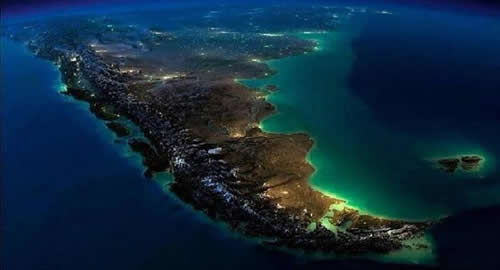

Real Chubut - Agencia de Noticias


Cómo es el Plan A de la “economía azul” que aspira a transformar la Argentina

El economista belga Gunter Pauli exhibió un entusiasmo rebosante en la presentación del Plan A de la Economía Azul. En los hechos, se trata de una exhaustiva hoja de ruta sobre las 10 propuestas presentadas hace poco más de un año, que involucró a cientos de personas y docenas de viajes a lo largo de la Argentina, para tratar de descubrir los lugares ideales para llevarlos a cabo y establecer un modelo de negocio sustentable y exitoso.
Hubo audiencias con científicos, estudiantes, desempleados, agricultores, cámaras de comercio, comunidades indígenas, artistas, industriales y funcionarios."Nuestro objetivo no es reciclar, no es la economía verde, sino la transformación de la economía", dice el creador de este modelo basado en los recursos disponibles de cada país.
Según el análisis, Argentina tiene un gran potencial para lanzar al menos 10 nuevas actividades para transformar su economía, en base a materias primas localmente accesibles en abundancia, una infraestructura existente para el transporte y el procesamiento, y una demanda comprobada en el en mercado. Ahora llegó el momento de la verdad y se sabrá si los inversores están listos para involucrarse.
• Proyectos azules
Los estudios concluyeron en que las condiciones son favorables, por ejemplo, para instalar una fábrica de papel piedra, que a diferencia del tradicional excluye la fibra vegetal y el agua del proceso. Su principal componente se obtiene de las rocas metalíferas que se mezclan con polímeros, por eso uno de las provincias sugeridas es San Juan, con un gran porcentaje de sus trabajadores empleados en la industria minera.
Por otro lado, los 3,3 millones de kms2 de mares serían un escenario propicio para cultivar un área gigantesca de algas marinas dedicada a la producción agrícola y de gas, que además provee un fertilizante como subproducto y captura CO2. "Si siembras soja en el campo obtienes hasta 23 toneladas por hectárea, nosotros en el mar obtenemos 1.000. Es muy simple... es un cultivo 3D, porque los 10.000 metros cuadrados se multiplican por los 3 metros de profundidad. Grobocopatel fue uno de los primeros en decir que teníamos razón", cuenta Pauli.
Otro de los desafíos consistía en cómo generar millones de dólares con nuevas fuentes de proteínas. Así se ideó un cluster, una idea central de la economía azul, en los que distintas áreas productivas se entrelazan y retroalimentan. En este caso, se diseñó cadena en la que los mataderos ofrezcan sus desechos como generadores de materia prima para cultivar larvas de moscas, que a su vez serán el alimento nutritivo de gallinas. "Sólo hay que identificar los mataderos y los criaderos de gallinas y pollos y conectarlos. Es sencillo, se genera empleo y se obtienen diversos beneficios", apunta el economista.
Otras ideas desarrolladas y probadas fueron la creación de empleo mediante la reforestación o la generación de tecnología Li-Fi, en la que los datos se transmiten a máxima velocidad a través de los cables de electricidad existentes, proporcionando un ahorro de energía del 50%. Se estima que su potencial de mercado podría superar los u$s 100.000 millones. ¿Cómo estas ideas en apariencia geniales aún están en ciernes? Para Pauli, una de las explicaciones es que no son conocidas: "La ignorancia es un gran problema, quizás el peor. Vengo de entrevistarme con un grupo de empresas y no sabían que existe la Internet por luz".
La espuma de vidrio es otro negocio "azul" a futuro en nuestro país. Se fabrica aplastando botellas de vidrio usadas y material de las industrias automotriz y de la construcción, una "harina" que posteriormente se calienta y se mezcla con otros elementos y que podría utilizarse para viviendas prefabricadas sustentables y de bajo costo. El estudio destaca como potenciales líderes a Tierra del Fuego y Mendoza, donde los productores de vino descartan millones de botellas al año por errores de producción.
En Jujuy la oportunidad pasará por aprovechar las fibras de vicuñas y guanacos, que podrían dejar hasta u$s 25 millones al año a las comunidades locales del norte de la provincia. "¡Veinticinco millones, no han podido pensar siquiera en uno!", exclama el economista.
Un proyecto destacado es el cultivo de hongos comestibles, cuya materia prima está disponible en todas partes: tanto en el aserrín de los aserraderos de Tierra del Fuego como en los residuos de la planta de procesamiento de soja en Santa Fe, o los recortes de árboles frutales en Río Negro, Neuquén, Mendoza, La Pampa y San Juan. El beneficio estimado: u$s 9.000 millones y 600.000 empleos. De acuerdo a los especialistas que elaboraron el documento del Plan A, la Argentina puede seguir los pasos de China, la nación productora de hongos más importante del mundo.
• Inversores azules
"La globalización no da oportunidades a todo el mundo. Sí a China, a la India, a EEUU, pero Argentina no está en esa lista. Entonces deben plantearse: ¿Cuáles son los recursos disponibles que tengo y cómo genero valor agregado para ser competitivo y sin impactar en el medio ambiente?", reflexionó Pauli. Puso como ejemplo la riqueza del país en las biodiversidades de levadura silvestre, un mercado de alto crecimiento a nivel mundial: "Y con toda esa riqueza de la Patagonia, todavía no pueden dar respuesta a las microcervecerías artesanales, la mayor parte de la levadura que se utiliza es importada".
El ministro de Ambiente y Desarrollo Sustentable, Sergio Bergman, destacó que lo importante será el impulso de "los grupos que tienen capital para otra manera hacer negocios". "Entendemos que lo tienen que desarrollar los privados. Acompañados por las políticas públicas, pero el Estado no se tiene que meter en lo que no tiene que meterse y debe dejar hacer a los que quieren hacerlo. No tenemos que reemplazar al emprendedor ni al empresario, sino hacerles la vida más fácil. Porque el Estado estaba acostumbrado a ser una máquina de impedir", acotó.
En ese sentido, Pauli transitó el mismo camino: "La solución no es ir a pedir plata al Estado para llevar a cabo un proyecto. Hay que crear emprendedores. Algunos de estos negocios tienen capacidad de llegar a escala de forma rápida... las larvas se produce en cinco días, las algas marinas se cosechan en seis meses, el Li Fi se activa desde que se cambia una lámpara".
El Plan A se presenta como una primera revisión, que requerirá de evaluaciones más detalladas pero marca un sendero y muestra los análisis concretos de los modelos de negocios. A modo de conclusión general, Bergman resumió: "Mientras tengamos prioridades como la inflación o el desempleo, estos temas no aparecerán como una prioridad en la agenda, pero nuestro trabajo es ir posibilitando el cambio y con estas iniciativas queremos impactar en la economía argentina. Se ha demostrado en concreto que se puede hacer, ahora es el turno de los hacedores".
Fuente: Ambito